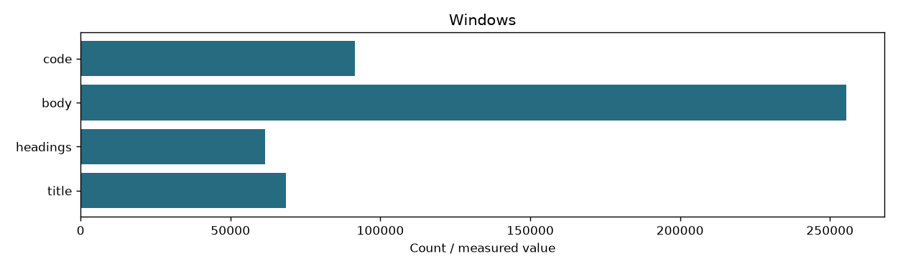
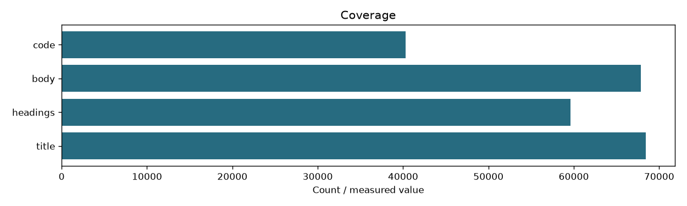

| fingerprint | 6243a1e92060be87bf31c54ccd305fb375d9d3482a75b317b51886ef24f198cf |
|---|---|
| documents | 68414 |
| windows | {'title': 68414, 'headings': 61511, 'body': 255445, 'code': 91536} |
| zone_coverage | {'title': 68414, 'headings': 59579, 'body': 67867, 'code': 40303} |
| zones | ['title', 'headings', 'body', 'code'] |
| content_tokens | 496 |
| overlap | 64 |
| source_fingerprint | f15488c8b98dc3f6f7f38152db2226dfef073173cd184609831edea290884f26 |
| max_tokens | 512 |

